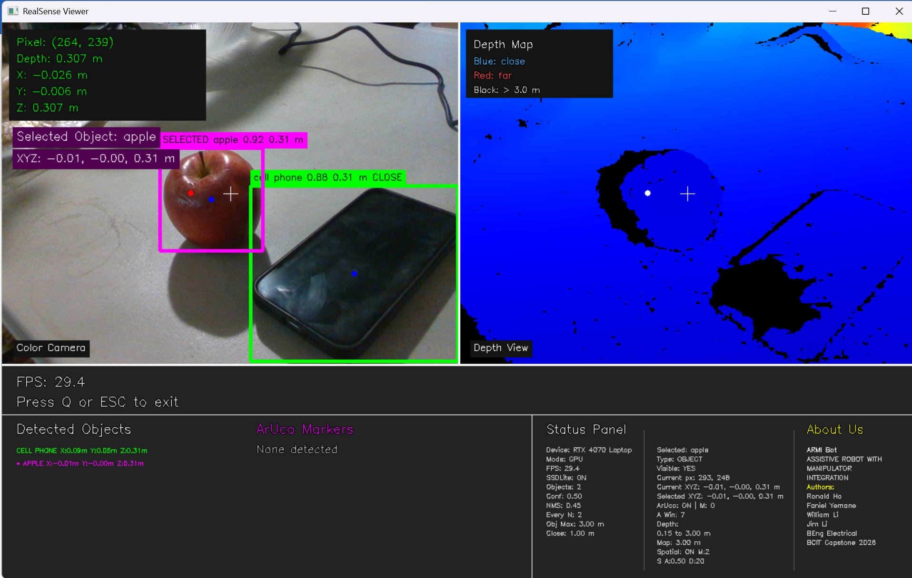

Team capstone · BCIT ELEX 7890
ARMI Bot perception
A perception and control interface for an assistive robotics capstone. The application combines RealSense depth sensing, SSDLite object detection, ArUco markers, and target selection in a responsive graphical viewer.
My contribution: GUI development, machine-learning integration, and object detection.
Team: Ronald Ho, Faniel Yemane, William Li, and Jim Li.
Explore the perception code